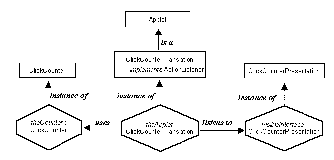

Click Counter Application
- Instance Diagram

The application is an instance of the ClickCounterTranslation class which creates and controls an instance of the ClickCounter (application) class and of the ClickCounterPresentation class.
The user sees and interacts with the ClickCounterPresentation instance which causes events to be dispatched to the ClickCounterTranslation instance which transmits them onto the ClickCounter instance. It then uses the enquiry actions of the ClickCounter instance to retrieve information which it uses to update the ClickCounterPresentation instance.